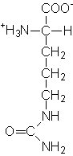
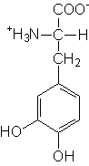
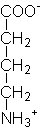
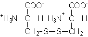

Se presenta asimismo en esta demostración la estructura de algunos Aminoácidos no proteicos de interés, tanto Intermediarios Metabólicos como Modificaciones postraduccionales.
Los modelos de aminoácidos aparecen en su forma iónica más usual a pH 7.4, es decir en forma de zwitterion, con los grupos -NH3+ y -COO- ionizados.
Aminoácidos Alifáticos o Neutros
Son aquellos aminoácidos cuya cadena lateral es alifática. Se incluye en este grupo la Glicina, el más simple de los aminoácidos, cuya cadena lateral es un hidrógeno:
Son aquellos aminoácidos cuya cadena lateral es aromática: un grupo benceno en la Fenilalanina, un grupo fenol en la Tirosina y un grupo indol en el Triptófano.
Algunos intermediarios metabólicos, así como ciertos neurotransmisores, tienen estructura de aminoácido aunque no aparecen en las proteínas. Son los llamados Aminoácidos No Proteicos.
Como ejemplo de intermediarios metabólicos, tenemos Ornitina, Citrulina, Homocisteína y Homoserina:

Así como la Dihidroxifenilalanina (DOPA), precursor metabólico de catecolaminas, hormonas tiroideas y melanina:

Se conocen también entre las biomoléculas los llamados w-aminoácidos (omega-aminoácidos), en los que el grupo amino sustituye al último carbono en lugar de sustituir al carbono a. Por ejemplo, la b-Alanina y el Ácido g-Aminobutírico (GABA), neurotranmisores inhibitorios en el sistema nervioso central:

Algunos aminoácidos son modificados químicamente después de haber sido integrados en la cadena polipeptídica, y a veces estos aminoácidos modificados aparecen en los hidrolizados de proteína. Se trata de las llamadas modificaciones postraduccionales, ya que se realizan después del proceso de traducción o síntesis proteica.
Muy a menudo se obtiene en los hidrolizados de proteína el aminoácido Cistina, que en realidad se trata de dos cisteínas unidas a través de un disulfuro:

En el colágeno tiene lugar habitualmente la hidroxilación de residuos de prolina y lisina, dando lugar, respectivamente a 4-Hidroxiprolina y 5-Hidroxilisina:
Algunos factores de la coagulación sanguínea presentan una modificación postraduccional consistente en un residuo de ácido glutámico carboxilado, el Ácido g-Carboxiglutámico. Esta modificación añade carga negativa adicional a dichos factores. Entre ellos destaca particularmente la protrombina.